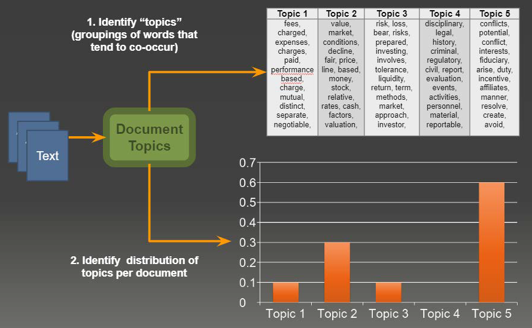
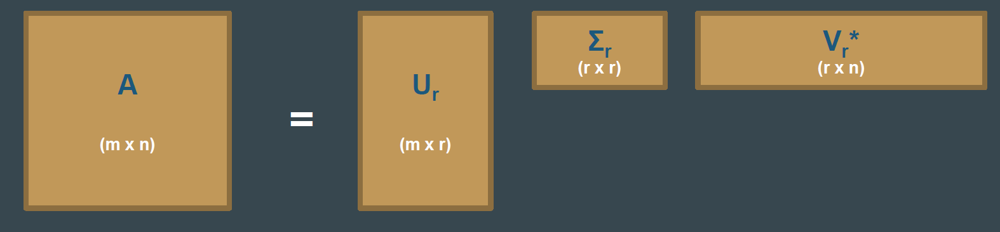

13.2 SVD and Topic Modeling
Latent semantic analysis from a word-document matrix.
1. Topics from a decomposition
Bag-of-words and TF–IDF give you a matrix. If you factor that matrix, the factors are often readable as topics.
That idea is latent semantic analysis (LSA): treat the DTM as ({\bf A}) and take a low-rank SVD.

A topic here is not a human essay title. It is a group of terms that travel together (classroom, teacher, student → a "school" factor) plus a weight for how much each document uses that group.
2. SVD, truncated
Any real matrix has a singular value decomposition. For topic modeling we keep the top (r) components:
[ {\bf A} \approx {\bf U}_r\,{\bf \Sigma}_r\,{\bf V}_r^{\ast}. ]

| Factor | Shape | Reading |
|---|---|---|
| ({\bf A}) | (m \times n) | Terms × documents (or the transpose; be consistent) |
| ({\bf U}_r) | (m \times r) | How each term loads on each of (r) topics |
| ({\bf \Sigma}_r) | (r \times r) | Diagonal. Size of each topic (importance) |
| ({\bf V}_r^{\ast}) | (r \times n) | How each document mixes those topics |
({\bf U}_r) is the dictionary: topic 1 is the terms with large entries in column 1. ({\bf \Sigma}_r) ranks the topics. ({\bf V}_r^{\ast}) is the recipe for each document (30% topic 1, 50% topic 2, …).
The number (r) is a choice. Too small and you merge distinct themes. Too large and you split noise into fake topics.
3. SVD and PCA are cousins
PCA on centered data is SVD on the covariance, or SVD on the data matrix itself.
- Left singular vectors of ({\bf A}) live in ({\bf U}).
- Singular values (\sigma_i) sit on the diagonal of ({\bf \Sigma}).
- For centered data, (\sigma_i = \sqrt{\lambda_i}) where (\lambda_i) is an eigenvalue of the covariance.
If you already centered the DTM and ran PCA, you have done a form of LSA. SVD is the cleaner statement when the matrix is rectangular (terms × documents), which a covariance matrix is not.
4. Why people still run it
Helps. Dimensionality drops: a huge TF–IDF matrix becomes (r) factors. Noise in the small singular values is thrown away. Topics are linear combinations of terms, so you can read the top words. The algorithm is old, stable, and in every scientific stack.
Hurts.
| Limitation | What it means on text |
|---|---|
| Terms treated as independent | Collocations and polarity can be split or mashed |
| Global only | No sentence window; bank is one column |
| Cost on sparse data | A wide DTM is expensive to factor in one shot |
| Needs the full matrix | Awkward for a stream of new documents |
| Negative entries | A term can load negatively on a topic; hard to explain to a client |
| No built-in (r) | You try several ranks and look at the words |
LSA is a strong baseline. Week 14 adds LDA (generative, non-negative mixtures) and NMF (additive, non-negative factors). Those exist in part to fix the last two rows.
When you run it, inspect the top terms in each column of ({\bf U}_r), not only the reconstruction error. A small error with unreadable factors is a failed topic model. A slightly worse error with namable columns is a success.
sklearn's TruncatedSVD on a TF–IDF matrix is the usual first run. Try (r \in {10, 20, 50}), print ten terms per component, and stop when new components are noise. That is LSA in practice.
5. Practice
-
In one sentence each, what do ({\bf U}_r), ({\bf \Sigma}_r), and ({\bf V}_r^{\ast}) mean for a news corpus?
-
A topic has large positive weight on goal and large negative weight on election. Why is that awkward to show a reader, and which later method avoids the sign?
-
You add 500 documents every night. Why is a one-shot SVD a poor production fit?
Nightly full SVD is a batch job. If that job cannot finish before morning, you need an incremental method or a periodic re-fit, not a larger (r).
Folding in a new document with ({\bf U}_r) is an approximation. Recompute when the vocabulary or the mix of themes has moved.